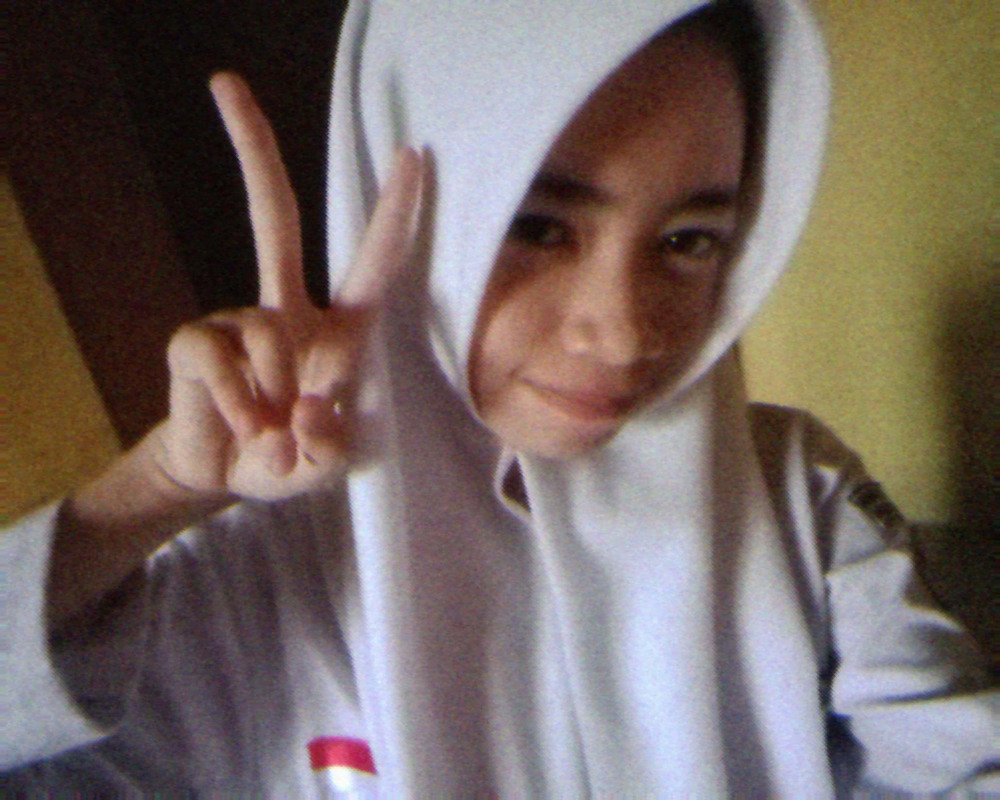
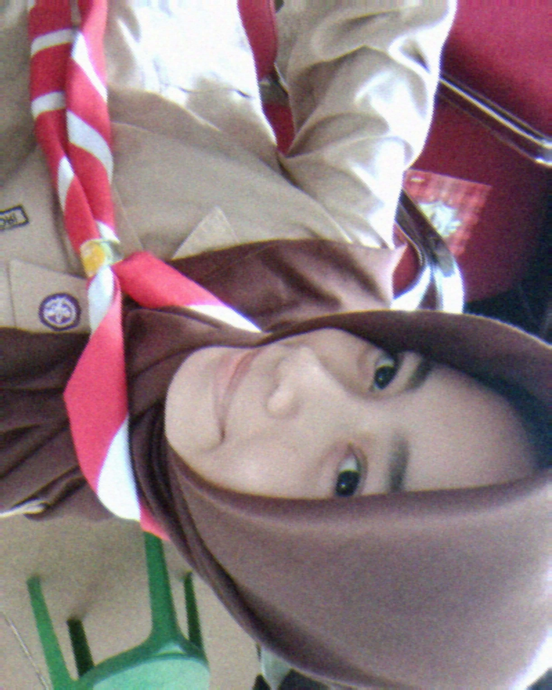
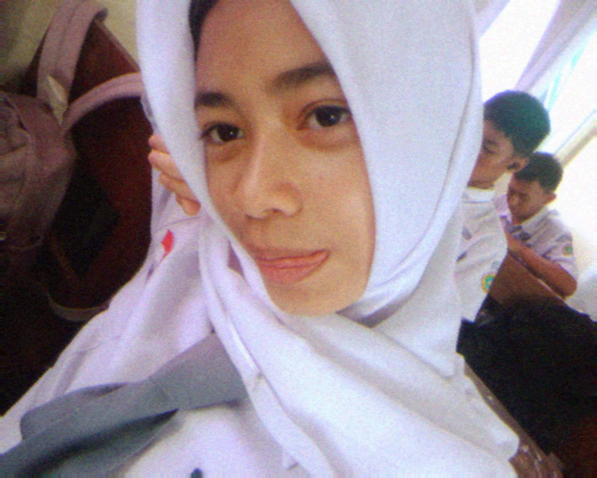
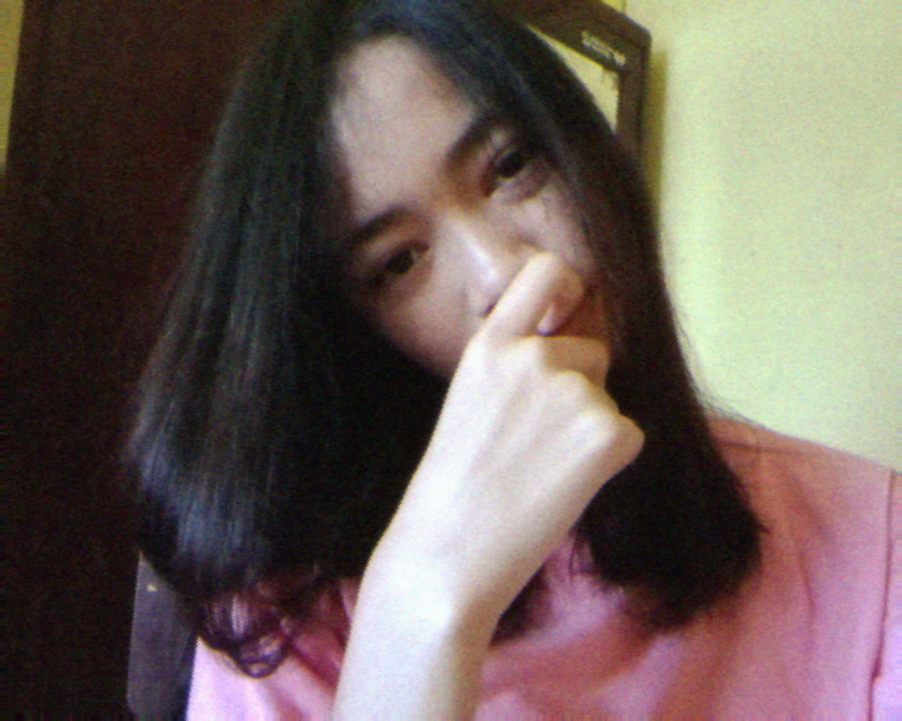
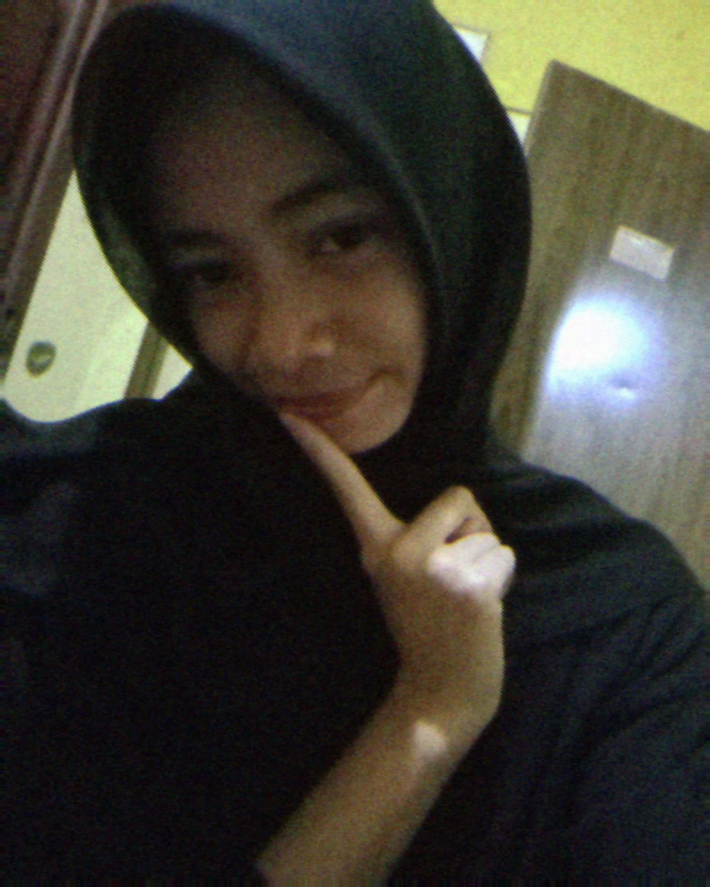
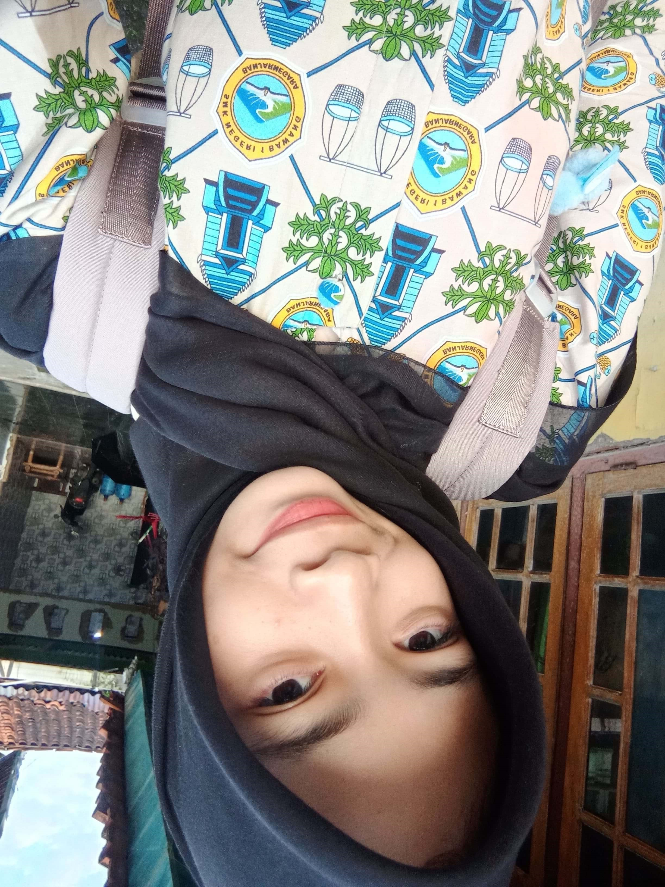
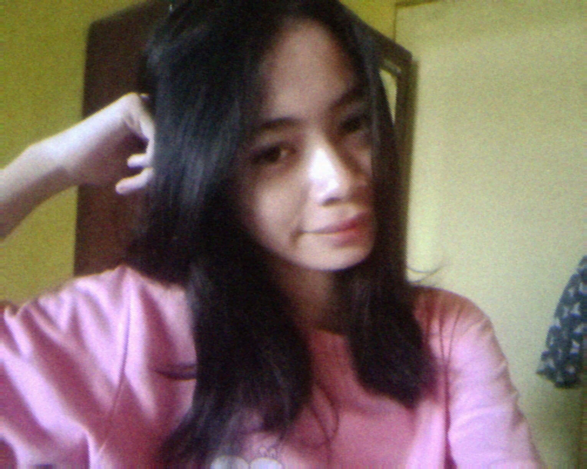
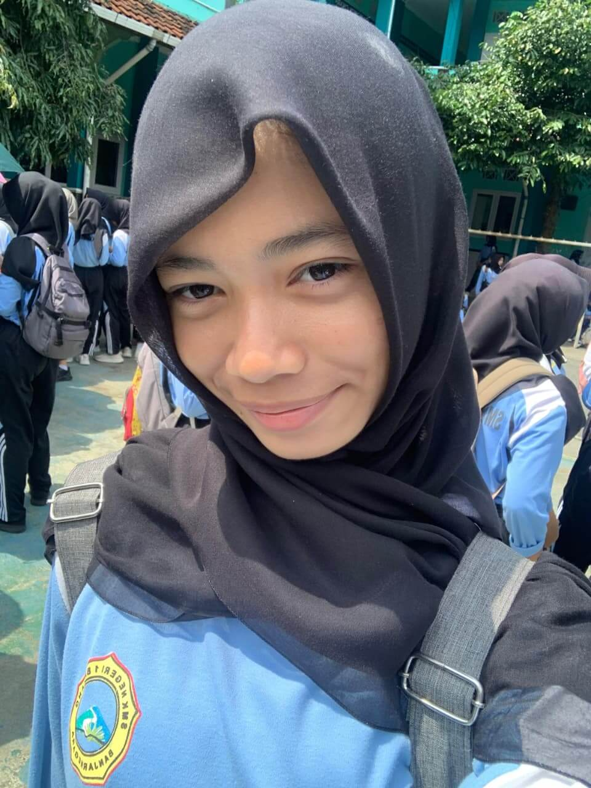
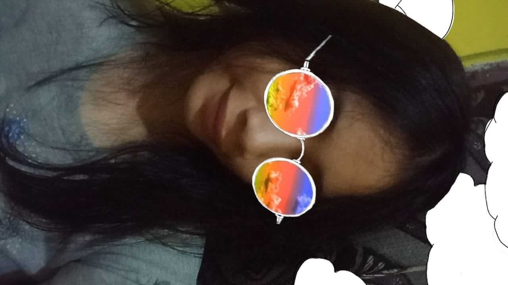
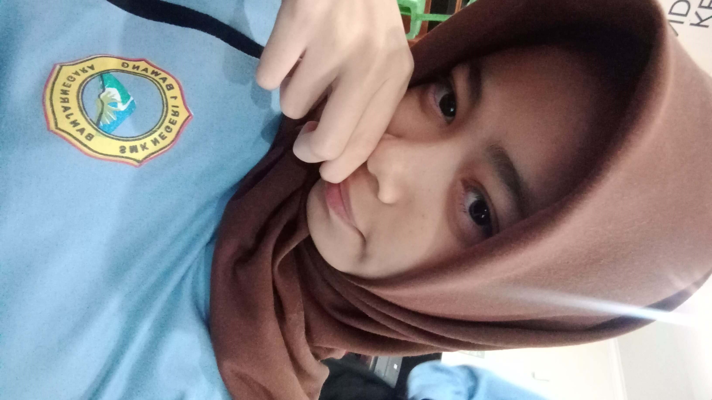

Spesial Lagu for Qila
“Sampai Jadi Debu & Kita Usahakan Rumah itu”
– pernah bilang kalo nyetel ini harus inget qila, Toty jadi suka
sama lagunya tauu biar inget qila terus. 2 lagu favorite sekarang karena
lagu ini juga punya makna yang dalam -

">">

">
">
">
">
">">

">
">">
">

">
">Bunga QIla

Kita usahakan rumah itu
Arti Lagu
🎶 Sampai Jadi Debu
Makna lagu akan muncul otomatis sesuai lagu yang diputar.